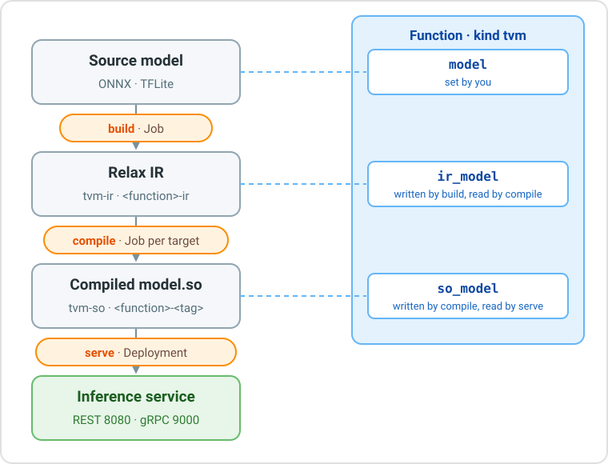

TVM Runtime
The TVM runtime compiles a trained model into native code with Apache TVM and serves it through the Open Inference v2 protocol, over REST and gRPC.
Use an ONNX or TFLite model with the Linux CPU pipeline described here. The toolkit compiles it; a Go or Rust runtime serves it. The same image can load different models. Compilation alone does not guarantee faster inference: measure the result on the intended device and use MetaSchedule when needed.

The runtime has three actions, run one after the other:
| Action | What it does | Runs as | Result |
|---|---|---|---|
build |
Converts the source model into Relax IR, the intermediate representation of TVM | Kubernetes Job | Model <function>-ir, kind tvm-ir |
compile |
Compiles the Relax IR into a native library, model.so, for a target architecture |
Kubernetes Job | Model <function>-<tag>, kind tvm-so |
serve |
Deploys the compiled model as an Open Inference v2 service | Kubernetes Deployment and Service | Inference service |
How it works
Build saves the IR reference in function.spec.ir_model; compile saves the compiled
Model in function.spec.so_model. The next action uses that reference unless its
Run supplies model_path. One IR can be compiled for several targets.
These updates affect the same Function version, not a new version. A build
leaves the previous SO usable. With concurrent compiles, the last successful
reference update wins. Running services keep their selected Model; to select a
specific build later, use a versioned model_path.
From a model to a prediction
| Step | What to do | Details |
|---|---|---|
| 1. Upload the model | Create a Model of kind onnx or tflite and upload the file |
Source Models |
| 2. Create the function | Create a function of kind tvm that points to the Model |
Function |
| 3. Build | Run the build action |
Build action |
| 4. Compile | Run the compile action for your target |
Compile action, examples |
| 5. Serve | Run the serve action |
Serve action |
| 6. Test | Send a request to the service | Test the service |
The TVM tutorial walks through all the steps with a YOLOv8 model, from the console and from the CLI.
Task settings and run options
| Where | What belongs there |
|---|---|
Function spec |
Source model, format, generated ir_model and so_model references |
Task spec |
Function reference, profile, resources, envs, secrets, volumes |
Build Run spec |
Toolkit image and conversion options |
Compile Run spec |
model_path, target selection, tag, image, optimization, tuning |
Serve Run spec |
Model, name, image, workers, replicas and service options |
A Run can override common Task settings. TVM options are specific to each Run; previous Runs and old Tasks do not supply their values. In the console, common settings are in Task, TVM options in Run. A compile Run looks like this:
kind: tvm+compile:run
spec:
task: tvm+compile://my-project/<task-id>
target_architecture: amd64
tag: amd64
optimization:
opt_level: 3
benchmark_runs: 10
tuning:
tuning_mode: "off"
resources: {cpu: "4", mem: 8Gi}
With the REST API, create the Task first and use its key in spec.task. The run
kinds are tvm+build:run, tvm+compile:run and tvm+serve:run. With the SDK, pass
these options to function.run(...). With dhcli run, pass the spec in a YAML file.
For scheduled/lifecycle runs, use the trigger's spec.template.
Flat compile parameters are also accepted. If a field is supplied both flat and inside a group, the grouped value wins; saved specs use the grouped form.
Source Models
Upload the model as a Model of kind onnx or tflite. The fields only describe the model and are all optional: the build action reads the real signature from the file.
| Kind | Fields |
|---|---|
onnx |
inputs, outputs, parameters, opset (the operator set version used at export) |
tflite |
inputs, outputs, parameters |
Each tensor in inputs and outputs has name, dtype and shape; quantized tensors also have scale, zero_point and quantized_dimension.
A Model of the generic kind model also works, for example one uploaded with dhcli upload: its format is then taken from the file extension.
Function
A function of kind tvm describes the model to compile and serve.
| Field | Required | What to enter |
|---|---|---|
model |
yes | The key of the source Model (store://<project>/model/<kind>/<name>:<id>, or without :<id> for the latest version), or an s3:// or https:// path. |
format |
no | auto (default), onnx or tflite. auto uses the kind of the Model, otherwise the file extension. |
ir_model |
no | Leave it empty: build fills it. |
so_model |
no | Leave it empty: compile fills it. |
kind: tvm
name: yolo-function
spec:
model: store://my-project/model/onnx/yolo
format: auto
When to set the format
auto works with a Model of kind onnx or tflite, and with any path ending with .onnx or .tflite. If a generic Model points to a folder or to a file without extension, set format to onnx or tflite.
Build action
The build action runs a Job that converts the source model into Relax IR and saves it as the Model <function>-ir, of kind tvm-ir.
- Load the ONNX model.
- Optionally convert it to another operator set version (
target_opset). - Optionally simplify the graph with onnxsim (
simplify). - Run the ONNX shape inference.
- Convert the graph into Relax IR, with
float32as default data type. - If some outputs of the IR have no shape, simplify the graph with onnxsim and convert it again (see Outputs without a shape).
- Save the IR and metadata, then publish the Model.
- Load the TFLite model.
- Convert it into Relax IR. Full-integer quantized models are supported; dynamic-range quantized models are not.
- Save the IR with its
metadata.jsonand publish the Model.
Build options
All fields are optional: for most models the defaults are enough. The conversion options apply to ONNX models only.
| Field | Default | What it does |
|---|---|---|
simplify |
false |
Simplifies the graph with onnxsim before converting it. When false, the build still does it by itself if the converted outputs have no shape. |
target_opset |
empty | Converts the model to this ONNX operator set version first. Leave it empty unless the model needs it: the conversion fails when ONNX has no converter for an operator. |
opset_override |
model opset | Operator set version the TVM importer assumes, instead of the one declared by the model. |
strict_shape_inference |
false |
Runs strict shape inference; a failure is logged and conversion continues without the inferred graph. |
data_prop |
false |
Propagates constant values during shape inference, to resolve more shapes. |
keep_params_in_input |
false |
Keeps the weights in a separate params.bin; compile embeds them again. |
sanitize_input_names |
true |
Rewrites the input names into valid identifiers. |
image |
toolkit image | Another image for this run. |
Outputs without a shape
TVM 0.26 converts some shape arithmetic into slices whose size is known only at run time, for example the box decoding at the end of YOLOv8. The outputs of the IR then have no shape, and compile cannot generate code for them.
The build handles this by itself: when simplify is false and some outputs have no shape, it simplifies the graph with onnxsim, which computes those values in advance, and converts it again. Nothing has to be set:
- the log of the build shows
some outputs have no shape: simplifying the graph with onnxsim and converting again; metadata.jsonof the IR Model has"simplify": trueand"simplified_automatically": true.
If onnxsim cannot simplify the graph, the build keeps the first conversion and warns that the outputs still have no shape: compile will then fail, see Troubleshooting.
Build output
| File | Content |
|---|---|
model.relax.json |
The Relax IR, read by compile. |
model.relax.ir |
An optional readable IR dump for debugging; compilation uses the JSON file. |
metadata.json |
Input and output tensors, source format and conversion settings. |
params.bin |
The weights, only with keep_params_in_input: true. |
Compile action
The compile action runs a Job that compiles the Relax IR into model.so for a target architecture and saves it as the Model <function>-<tag> (<function>-so by default), of kind tvm-so, linked to the IR Model it comes from.
Target CPU profiles
The console displays Target CPU Profile: the architecture comes first, followed by
an optional CPU feature level or board profile. amd64 means Intel/AMD 64-bit,
arm64 means ARM 64-bit (AArch64), and our arm32 profile requires ARMv7 hard-float
with NEON. Armv7/Armv8/Armv9 are architecture generations, not synonyms for bitness.
target_architecture |
Where the model runs | Typical devices |
|---|---|---|
auto (default) |
The architecture of the cluster node that runs the Job, with generic code | Nodes of the cluster |
amd64 |
Intel/AMD 64-bit CPUs with the full x86-64-v2 feature set | Compatible servers, PCs and cluster nodes |
amd64_v3 |
Intel/AMD 64-bit CPUs with the full x86-64-v3 feature set, including AVX2 and FMA | Compatible recent servers and PCs |
amd64_native |
CPU features matching the node that runs the Job | Nodes compatible with the compile node |
arm64 |
64-bit ARM (aarch64) | Raspberry Pi 3, 4, 5 with a 64-bit OS, NVIDIA Jetson, ARM servers |
arm64_pi5 |
Raspberry Pi 5 (Cortex-A76, 4 cores) | Raspberry Pi 5 with a 64-bit OS |
arm32 |
ARMv7-compatible 32-bit ARM with the hard-float ABI and NEON (armhf) | Raspberry Pi 2, 3, 4 with a 32-bit OS |
A more specific profile can improve performance, but requires compatible CPU features.
The model, OS and runtime must also agree on bitness and ABI. auto does not enable
native CPU optimization; arm64_pi5 is not portable to Pi 3/4.
Legacy API values remain accepted: cpu/llvm → auto, x86 → amd64,
x86_v3 → amd64_v3, x86_native → amd64_native, armv7l → arm32.
Aliases are resolved from the configuration; stored run values are not rewritten.
The console shows the canonical profile names.
LLVM triples, compiler names and container platforms keep their standard names.
Runtime images and CORE's init image
Go and Rust runtime image builds cover AMD64, ARM64 and ARMv7. ARM32 compilation and inference remain supported. CORE's default init image covers only AMD64 and ARM64, so serving on an ARM32 cluster node also requires an ARMv7-compatible init image to download the model. Standalone serving with a mounted model does not use it.
The compiler host and the model destination are independent:
| Toolkit host | Model destinations included in the image |
|---|---|
| AMD64 | AMD64, ARM64, ARM32 (ARMv7 hard-float) |
| ARM64 | AMD64, ARM64, ARM32 (ARMv7 hard-float) |
Only amd64_native requires an AMD64 compile node. auto generates generic code
for the compile node. Use the existing run profile to select a compatible toolkit
node; there is no ARM32 toolkit image.
Configurable profiles
Platform administrators configure profiles in CORE's runtime-tvm.yaml. Each entry
separates its display name (label), standard TVM options as a JSON string (target)
and C++ linker settings (linker). The compiler and console use the same catalogue;
neither Java nor the SDK contains a fixed target enumeration.
Mount an override file and set RUNTIME_TVM_CONFIG=file:/etc/digitalhub/runtime-tvm.yaml,
then restart CORE. Keep all settings in one YAML document: the shared loader reads
the first document only. Entries merge with the bundled profiles:
runtime:
tvm:
targets:
arm64_pi4:
label: Raspberry Pi 4 - ARM 64-bit (Cortex-A72)
target: >-
{"kind": "llvm", "mtriple": "aarch64-linux-gnu", "mcpu": "cortex-a72",
"mattr": ["+neon"], "num-cores": 4}
linker:
command: aarch64-linux-gnu-g++
options: []
The new profile is selected as target_architecture: arm64_pi4. YAML's >- stores
the following JSON as a string. mtriple identifies the architecture/OS/ABI, mcpu
selects the CPU, mattr lists instruction features and num-cores sets the target
core count used for scheduling. The shared YAML reader loads this complete string,
so JSON lists, numbers and nested options retain their types when passed to TVM.
linker.command is the C++ compiler used to link model.so; linker.options is a
list of separate arguments, such as ["--sysroot=/opt/sysroots/arm64"]. Optional profile
fields are aliases (unique lowercase alternative names) and compiler-architecture (a Kubernetes
architecture constraint for the compile node, needed by amd64_native). The separate
Run profile chooses where the Job executes; it does not select the model's target.
optimization.target_num_cores overrides the Job CPU request; either one overrides
target.num-cores. If neither is set, the value in the target remains, including
with mcpu: native; native detection supplies a core count only when it is absent.
Use an explicit core count when tuning for a device with different resources.
Run options keep their names: optimization.cross_cc overrides linker.command,
and optimization.cross_cc_options overrides linker.options.
For compiler arguments, choose Profile defaults to inherit the YAML configuration,
or Custom arguments to replace it. An explicit empty list clears those defaults.
An override file keeps omitted profiles and fields. Supplying target replaces its
whole definition rather than inheriting potentially incompatible CPU features.
When migrating older override files:
- Replace each
targetYAML mapping with a JSON string as shown above. - Move profile-level
cross-cctolinker.command. - Move profile-level
cross-cc-optionstolinker.options. - Combine settings from documents separated by
---into one YAML document; only the first document is loaded.
This format applies only to the administrator's catalogue: an explicit Run target
remains an object, and optimization.cross_cc / optimization.cross_cc_options
remain Run options. SDK requests and model metadata are unchanged.
Invalid target JSON or unknown target-profile fields prevent CORE from starting.
Explicit target for one run
For an advanced, one-off configuration, omit target_architecture or leave it at
auto, then provide a standard TVM LLVM target:
target:
kind: llvm
mtriple: aarch64-linux-gnu
mcpu: cortex-a72
optimization:
cross_cc: aarch64-linux-gnu-g++
cross_cc_options: []
Do not combine an explicit target with a non-auto profile. An explicit target
does not inherit a preset's linker settings. cross_cc_options passes
arguments separately; for example ["--sysroot=/opt/sysroots/arm64"] uses target
libraries at that path inside the compile container.
The compiler links a small LLVM object before processing the model, so a missing
or incompatible toolchain fails early. Another CPU family may require a custom
image with its LLVM backend, compiler and target libraries. Configuring its name
does not add a runtime image. This integration remains Linux/CPU; Jetson Orin CUDA
needs a separate GPU integration.
Compile options
All fields are optional. These fields are directly inside the Run spec:
| Field | Type | Default | Purpose |
|---|---|---|---|
model_path |
string | Function ir_model |
IR Model to compile; an explicit reference always wins. |
target_architecture |
string | auto |
Name from the configured CPU catalogue. |
target |
object | unset | Standard LLVM target instead of a non-auto preset. |
tag |
string | so |
Model name suffix: <function>-<tag>. Use a different tag for each target if useful. |
image |
string | Toolkit image | Image used by this compile Job. |
The following fields go inside optimization (Advanced compilation):
| Field | Type | Default | Purpose |
|---|---|---|---|
target_num_cores |
integer ≥ 1 | Job CPU request, rounded up | Cores used to optimize the generated code; see the precedence above. |
opt_level |
integer 0–3 | 3 |
TVM pass optimization level. |
exec_mode |
string | bytecode |
Relax VM graph execution: bytecode or compiled. Both use compiled operators. |
cross_cc |
string | Preset linker, otherwise native compiler | C++ compiler linking model.so; e.g. aarch64-linux-gnu-g++. |
cross_cc_options |
list of strings | Preset arguments, normally [] |
Separate linker arguments. Explicit [] clears the preset arguments. |
relax_pipeline |
string | default |
Installed Relax pipeline name. |
tir_pipeline |
string | default |
Installed TIR pipeline name. |
system_lib |
boolean | false |
Advanced system-library mode; the Go/Rust serve images cannot load it. |
params_path |
string | IR params.bin |
Optional weights file path inside the Job. |
benchmark_runs |
integer ≥ 0 | 10 |
Timed CPU inferences on the compile host; 0 disables them. |
These optimization settings still apply when MetaSchedule is off. Tuning fields belong to the separate tuning group.
Compile examples
In the console, choose compile → CREATE and set the target in the Run step.
With the CLI, save this as compile.yaml:
spec:
target_architecture: amd64
tag: amd64
optimization:
opt_level: 3
resources: {cpu: "4", mem: 8Gi}
dhcli run tvm+compile -p my-project -n yolo-function -f compile.yaml
Change target_architecture and tag to arm64 or arm32 to compile the same IR
for those devices. The preset supplies the linker. For a specific IR version, add
model_path: store://my-project/model/tvm-ir/yolo-function-ir:<id> to the Run.
Each successful compile updates so_model. After an ARM compile, a new serve uses
that ARM Model. To serve an earlier AMD64 build, set serve model_path to its
versioned tvm-so key. An existing service is not changed.
Compile output
| File | Content |
|---|---|
model.so |
The compiled model. |
metadata.json |
The IR metadata plus how the library was built: target, optional target_requested, target_triple, tvm_version, tvm_git_commit, opt_level, exec_mode, relax_pipeline, tir_pipeline, tag, and the benchmark and meta_schedule sections when present. |
tuning/ |
The tuning database, only for tuned models. |
The metadata fields describe different stages:
| Field | Meaning |
|---|---|
target |
Effective TVM target used to compile, with the resolved triple, CPU and core count. |
target_requested |
Original target passed to the compiler, saved when different from target; useful for diagnosing auto or mcpu: native. Not a Run option. |
target_triple |
Architecture, OS and ABI, e.g. aarch64-linux-gnu; CORE uses it to select a serving architecture. |
The Run's target is an input object; the Model's target is the resolved target
serialized as a string. The Go/Rust runtime consumes the Model metadata, not the
preset name or CORE's YAML file.
toolchain records the compiler executable, its argument list and the compiler
host triple. These identify how the library was linked; they do not change where
the compiled model can run.
Model Optimization
Untuned CPU code can be slower than ONNX Runtime. MetaSchedule measures candidate schedules on the target hardware and applies the best valid records it finds. The result depends on the model, hardware, thread count and search budget; compare measured inference times before assuming an improvement.
| Mode | Active settings | Result |
|---|---|---|
off (default) |
No tuning fields | Ordinary compilation; other tuning values are retained but ignored before validation. |
tune |
Database/coverage, search and measurement settings | Measures candidates and saves the database in the compiled Model's tuning/ folder. |
apply |
tuning_model_path, tuning_ops, allow_partial_tuning |
Uses a selected database without running a search. |
The form hides inactive fields and supplies typed defaults when tuning is enabled.
The total tuning_trials budget remains your choice. A later Run never discovers a
database automatically: set tuning_model_path to reuse or continue one.
Tune once
Tune on hardware compatible with the serving CPU. Set resources in Task, then the target, Advanced compilation and MetaSchedule tuning in Run:
spec:
target_architecture: amd64_native
tag: tuned
resources:
cpu: '4'
mem: 8Gi
optimization:
target_num_cores: 4
tuning:
tuning_mode: tune
tuning_trials: 8000
max_trials_per_task: 256
Result: the Model <function>-tuned, whose tuning/ folder holds the database. Its key, shown in the detail page of the Model, is what the next compiles need, for example store://my-project/model/tvm-so/yolo-function-tuned:<id>.
Reuse a tuning
Set tuning_mode: apply and the versioned key of the tuned Model. Keep the same
effective target and core count:
spec:
target_architecture: amd64_native
tag: fast
optimization:
target_num_cores: 4
tuning:
tuning_mode: apply
tuning_model_path: store://my-project/model/tvm-so/yolo-function-tuned:<id>
The Job downloads and validates that Model's tuning/ folder, then applies its records without new measurements. The meta_schedule section of the new metadata.json shows "mode": "apply" and "database_reused": true. The new Model has its own copy of tuning/, so it can be reused in turn.
A tuning can be reused only when these match:
| Must match | Why it matters |
|---|---|
| TVM version and commit | Use a toolkit containing the same Apache TVM version and commit, e.g. tvm-toolkit:0.26.0-r1. |
| Target | Same effective target, including CPU features and target_num_cores. When target_num_cores is empty it comes from resources.cpu: changing the CPUs of the run makes the database incompatible. With amd64_native the CPU model of the node counts too. |
| IR | Matching source/IR identity; changing the model or conversion can invalidate the database. |
| Coverage | All selected tunable functions need valid records unless allow_partial_tuning is true. Unselected operations keep default schedules. |
When something does not match, the run stops in ERROR with incompatible MetaSchedule database and the list of differences, or with does not cover every selected function.
Continue a tuning
To add more measurements to an existing database, run compile with tuning_mode: tune, the key of the tuned Model in tuning_model_path and a tuning_trials budget for the search. The search restarts from the variants already measured.
Tuning options
All these fields go inside tuning. Counts are integers; timeouts are seconds.
| Field | Default | What it does |
|---|---|---|
tuning_mode |
off |
off, tune (search the fastest code) or apply (reuse an earlier search). |
tuning_trials |
empty | Total number of variants to measure. Required with tune. |
max_trials_per_task |
16 |
Maximum variants per extracted tuning task (which can contain fused operators). |
tuning_trials_per_iter |
64 |
Variants measured for each task in one round. |
tuning_ops |
all | List of task-name filters, e.g. [conv2d]; applies to both tune and apply. |
tuning_model_path |
empty | An earlier compiled Model: tune continues its search, apply uses it. Required with apply. |
tuning_workers |
resources.cpu |
Parallel candidate builds; with RPC, also the maximum parallel device connections. |
tuning_seed |
0 |
Random seed, for repeatable searches. |
tuning_number |
3 |
Runs averaged in one measurement. |
tuning_repeat |
1 |
Measurements taken for each variant. |
tuning_min_repeat_ms |
100 |
Minimum length of one measurement, in milliseconds. |
tuning_alloc_repeat |
1 |
Input buffers rotated between measurements, to reduce cache effects. |
tuning_enable_cpu_cache_flush |
false |
Flushes the CPU caches before each measurement. |
tuning_builder_timeout_sec |
30 |
Time limit to compile one variant. |
tuning_runner_timeout_sec |
30 |
Local runner timeout; ignored with RPC, which uses its session timeout. |
allow_partial_tuning |
false |
Allows incomplete optimization for intentional partial searches; it still requires usable records. |
Failed candidates are counted in tuning/errors.json, which also records the first
error returned by TVM. The Job log shows that cause directly. On a busy node, set
larger builder/runner timeouts explicitly. Compilation stops before publication
when the database has no valid records.
Tuning on a device
For a target that cannot execute on the compile node, register a compatible device
with a TVM RPC tracker and use tuning_runner: rpc. The device needs the matching
TVM runtime and libraries. Alternatively, use apply with a compatible database.
These fields also belong inside tuning:
| Field | Default | What it does |
|---|---|---|
tuning_runner |
local |
local measures in the compile Job, rpc on a device registered with the tracker. |
rpc_tracker_host |
empty | Host of the TVM RPC tracker. Required with rpc. |
rpc_tracker_port |
empty | Port of the TVM RPC tracker. Required with rpc. |
rpc_tracker_key |
empty | Key the device is registered with. Required with rpc. |
rpc_session_timeout_sec |
60 |
Time limit of one RPC session. |
Local tuning ignores RPC fields. CORE rejects missing tuning budgets/databases,
tuning_workers above the Job CPU allocation, and local target cores above that
allocation. The compile Job checks the actual
host architecture, ABI and CPU instructions detectable by LLVM before local
measurements; this is not an exhaustive CPU compatibility certification. ARM targets can
be tuned locally on compatible ARM nodes; using cross_cc is not itself a reason
to reject local tuning or skip a benchmark. Otherwise use RPC or apply a matching
database. RPC receives candidates linked with the same compiler/options as the
final model.
Budget and measurements
- The first-round budget is
selected tasks × min(tuning_trials_per_iter, max_trials_per_task). The log reports it. The default cap of 16 trials per task is small; increase it together with the total budget for a wider search. - Use the same target and threads per worker when tuning, benchmarking and serving.
benchmark_runsmeasures TVM in a subprocess on the compile host: synthetic inputs are allocated first, up to five warm-ups run, then the configured number of VM calls are timed. Metadata recordsmean_ms,p50_ms,p90_ms,min_ms, thread count and sample count. It excludes image preparation, HTTP and model loading.- An incompatible host, unsupported CPU instructions or a failed benchmark can
produce
benchmark.skipped; that is not an inference result on the target device. This built-in benchmark does not compare against ONNX Runtime.
Serve action
The serve action deploys the compiled Model. An init container downloads model.so and metadata.json into the pod; the serve image loads them and exposes the model on port 8080 (REST) and 9000 (gRPC).
Serve options
All fields are optional.
| Field | Default | What it does |
|---|---|---|
model_path |
function so_model |
Key of the compiled Model to serve. |
served_name |
function name | Name of the model in the API, /v2/models/<served_name>. Letters, digits, ., _ and -, starting and ending with a letter or digit. |
replicas |
1 |
Number of pods, zero or greater. |
workers |
1 |
Requests handled in parallel by each pod; each worker loads its own copy of the model. |
service_type |
ClusterIP |
Kubernetes Service type: ClusterIP, NodePort or LoadBalancer. |
service_name |
empty | Extra Service name, <function>-<service_name>. |
image |
platform serve image (Go by default) | Custom serve image for this run, overriding RUNTIME_TVM_SERVE. See Serving runtimes. |
spec:
workers: 1
resources:
cpu: "2"
mem: 2Gi
When the Run requests CPUs, CORE derives the thread count from CPUs divided by workers (at least one thread). To choose the number yourself, add TVM_NUM_THREADS to envs.
When the Run is RUNNING, status.service reports the platform address.
status.inference_v2 contains baseUrl, model, inferenceUrl, modelMetadataUrl,
modelReadinessUrl, readinessUrl and livenessUrl for the console client.
served_name defaults to the Function name; service_name does not rename the model.
Use REST port 8080, not gRPC port 9000.
An explicit model_path wins over the Function reference. The selected key is
saved in the Run; clear it when copying a Run if the new service should use the
Function's current so_model.
Where the service runs
A model.so runs only on the CPU architecture it was compiled for. The platform reads the architecture from the compiled Model and starts the service only on the nodes of the same architecture (the node label kubernetes.io/arch):
| Compiled for | Nodes of the service |
|---|---|
amd64, amd64_v3, amd64_native, auto on an AMD64 node |
amd64 |
arm64, arm64_pi5, auto on an ARM64 node |
arm64 |
arm32 |
arm (ARMv7, hard-float, NEON) |
Go and Rust runtime image builds include all three architectures. Each node downloads
its image variant. An ARM64 model can be served inside the platform when the cluster
has ARM64 nodes, for example a Raspberry Pi running a 64-bit OS and joined to the cluster.
ARM32 nodes also need an ARMv7-compatible init image: CORE's default init image covers
only AMD64 and ARM64. Matching the architecture does not replace CPU-feature and ABI
compatibility checks; for example, an arm64_pi5 model needs a compatible Cortex-A76 CPU.
No node of the right architecture
If the cluster has no node of the model architecture, the service stays PENDING. Choose a compatible node/profile or serve a Model compiled for the available nodes.
A profile that sets its own node selector takes precedence over this choice.
Endpoints
| What | REST | gRPC |
|---|---|---|
| Server live | GET /v2/health/live |
ServerLive |
| Server ready | GET /v2/health/ready |
ServerReady |
| Server metadata | GET /v2 |
ServerMetadata |
| Model ready | GET /v2/models/<name>/ready |
ModelReady |
| Model metadata | GET /v2/models/<name> |
ModelMetadata |
| Inference | POST /v2/models/<name>/infer |
ModelInfer |
The gRPC API is the inference.GRPCInferenceService of the KServe v2 protocol.
Read /v2/models/<name> first, then send exactly the advertised input names,
datatypes, shapes and number of values. For a model exposing x: FP32 [1,4], this
is a complete inference request (it is not a YOLO input):
{
"inputs": [
{"name": "x", "datatype": "FP32", "shape": [1, 4], "data": [1.0, 2.0, 3.0, 4.0]}
]
}
The response lists output tensors with their name, datatype, shape and data.
For quantized INT8/UINT8 tensors, REST metadata includes parameters.scale,
parameters.zero_point and, when present, parameters.quantized_dimension.
Recover real values with real = (quantized - zero_point) * scale; per-axis values
apply along quantized_dimension (zero when omitted).
Health success is HTTP 200; clients should not require a JSON body, which differs
between the Go and Rust servers. A metadata request is a convenient check through
the CORE proxy.
Rules for the requests:
dataholds the values in row-major order, flat or nested.- Inputs are matched by name when every input has a name that matches the model; otherwise by position.
- Supported data types:
FP32,FP64,INT8,INT16,INT32,INT64,UINT8,UINT16,UINT32,UINT64.FP16is not supported.
Test the service
The default ClusterIP service is internal to the cluster. There are three ways to
test it; NodePort/LoadBalancer access depends on the platform network configuration.
The CLI (version 0.15 or later) opens an authenticated port-forward to the service. It carries REST requests only.
dhcli login
dhcli services -p my-project
dhcli port-forward -p my-project -f yolo-function -l 18080
In another terminal:
curl http://localhost:18080/v2/models/yolo-function
Download the compiled Model and run the same serve image on your computer. REST and gRPC both work.
dhcli download model -p my-project -n yolo-function-amd64 -d ./yolo-model
docker run --rm -p 8080:8080 -p 9000:9000 \
-v "$PWD/yolo-model:/shared/model" \
-e TVM_MODEL_NAME=yolo-function \
ghcr.io/scc-digitalhub/tvm-runtime-go:0.26.0-r2
In another terminal:
curl http://localhost:8080/v2/models/yolo-function
The model must be compiled for the architecture of your computer (amd64 or auto on a compatible Intel/AMD 64-bit PC).
Use a device with Docker and either a 64-bit ARM OS or an ARMv7 hard-float 32-bit OS with NEON. Download the matching Model and start the image there. For a 64-bit OS:
dhcli download model -p my-project -n yolo-function-arm64 -d ./yolo-model
docker run --rm -p 8080:8080 -p 9000:9000 \
-v "$PWD/yolo-model:/shared/model" \
-e TVM_MODEL_NAME=yolo-function \
ghcr.io/scc-digitalhub/tvm-runtime-go:0.26.0-r2
For a 32-bit OS, download yolo-function-arm32 instead. For a 64-bit OS, use arm64 (or arm64_pi5 on Pi 5). Docker picks the image variant of the device automatically. This standalone example does not use CORE's init image.
The tutorial includes a standalone Python client for a real picture. It does not depend on private or locally ignored test scripts.
Common run options
Every action accepts the standard options of the platform: resources, envs, secrets, volumes and profile (see Kubernetes resources). Starting values for small models (adjust to the model and available resources):
| Action | CPU | Memory | Notes |
|---|---|---|---|
build |
2–4 | 4–8 Gi | Grows with the model size. |
compile |
4 | 8 Gi | Starting point for small models; tuning and larger models can need more memory. |
serve |
1–4 | 1–2 Gi | The CPUs are split among the workers. |
resources.disk sets the working volume size (default 4Gi). profile chooses
platform scheduling/resources, not the model target. A profile node selector takes
precedence over the runtime selector; choose compatible compiler and serving nodes.
inputs records consumed entity keys; it does not contain inference tensor data.
Inside the Jobs
The build and compile Jobs run the tvm-toolkit image, which contains only the tools: Apache TVM, LLVM, the native/cross compilers and the ONNX and TFLite importers. The scripts that do the work are part of the runtime: the platform mounts them into each Job, so a new version of the platform updates them without a new image.
| Script | Role |
|---|---|
entrypoint.sh |
Prepares the working folders and starts the script of the action. |
build_onnx.py, build_tflite.py |
Convert the source model into Relax IR (build). |
compile_model.py |
Compiles the IR into model.so (compile). |
tuning.py, benchmark.py |
MetaSchedule tuning and the timing of the library, used by compile_model.py. |
publish.py |
Uploads the result as a Model of kind tvm-ir or tvm-so and records it in the run. |
common.py |
Helpers shared by the other scripts. |
The platform chooses the script from the action and the source format, and passes every option of the run as an environment variable (TVM_TARGET, TVM_OPT_LEVEL, ...). When the script ends, the platform copies the key of the published Model into the function field ir_model or so_model.
Publication uses direct HTTP calls to Core, not the DigitalHub SDK. Core supplies
signed upload URLs and the storage path. The scripts upload the artifacts, including
large files through multipart uploads, register the Model and verify the run output.
The DHCORE_* credentials are used only for Core and are not forwarded to storage.
Serving runtimes
The serve action can use two images. They read the same model folder, expose the same endpoints on the same ports and accept the same requests. Go is the platform default; use the image field to choose another serve image for a single run:
spec:
image: ghcr.io/scc-digitalhub/tvm-runtime-rust:0.26.0-r1
Each image is multi-arch: the same tag serves amd64, arm64 and arm/v7 nodes, and each node downloads its own variant. There is no image to choose per architecture.
| Go (default) | Rust | |
|---|---|---|
| Image | ghcr.io/scc-digitalhub/tvm-runtime-go:0.26.0-r2 |
ghcr.io/scc-digitalhub/tvm-runtime-rust:0.26.0-r1 |
| Server | Nuclio processor with a native tvm runtime |
Standalone tvm-serve server |
| How it calls TVM | Go, through cgo and the TVM C API | Rust, through the TVM C API |
| Parallel requests | One Nuclio worker per workers, each with its own model copy |
One thread per workers, each with its own model copy |
| Maximum REST request | 512 MiB | 1 GiB |
| Maximum gRPC message | 512 MiB | 512 MiB |
| Maximum output tensors | 64 | No equivalent fixed limit |
| Extra response field | — | parameters.inference_time_ms |
| Platforms | linux/amd64, linux/arm64, linux/arm/v7 |
linux/amd64, linux/arm64, linux/arm/v7 |
Neither image contains Python. Each serves one Model, without automatic request batching. Clients handle preprocessing and output decoding. Both use these environment variables:
| Variable | Default | Description |
|---|---|---|
TVM_MODEL_DIR |
/shared/model |
Folder with model.so and metadata.json. Set by the platform. |
TVM_MODEL_NAME |
model |
Model name in the API. Set from served_name, otherwise the Function name. |
TVM_SERVE_WORKERS |
1 |
Parallel workers. Set by the platform from workers. |
TVM_NUM_THREADS |
every core | Threads used by TVM for each worker. Set by the platform from resources.cpu / workers, unless envs sets it. |
TVM_SERVE_PORT |
8080 |
REST port. |
TVM_SERVE_GRPC_PORT |
9000 |
gRPC port. |
At startup, both images refuse a model, with a clear error, when it was compiled with another TVM release or for another CPU architecture, or when it uses an unsupported data type.
Use compatible Apache TVM builds
The serve images check that model.so was built with their own Apache TVM
version and commit. Rebuild the IR and compiled models when either changes.
An image tag can also identify a packaging revision: for example,
0.26.0-r1 can still contain Apache TVM 0.26.0. Changing that revision alone
does not require recompiling models, but verify the existing models with the
new image before deployment. CPU, ABI and data-type requirements still apply.
Models produced
The build and compile actions publish Models named <function>-ir (kind tvm-ir) and <function>-<tag> (kind tvm-so). The framework is tvm, the algorithm tvm-relax-ir or tvm-compiled-so, and the specification contains:
| Field | Description |
|---|---|
entry |
Function of the model to call, usually main. |
inputs, outputs |
Tensors, with name, dtype, shape and, when quantized, scale, zero_point and quantized_dimension. |
source_format, keep_params_in_input, sanitize_input_names |
How the IR was built (tvm-ir). |
target, opt_level, manifest |
How the library was compiled, and its full metadata.json (tvm-so). |
Platform configuration
Administrators choose the images with these environment variables of the Core:
| Variable | Default | Description |
|---|---|---|
RUNTIME_TVM_CONFIG |
bundled YAML only | Optional external YAML location, e.g. file:/etc/digitalhub/runtime-tvm.yaml; restart CORE after changing it. |
RUNTIME_TVM_BUILDER_ONNX |
ghcr.io/scc-digitalhub/tvm-toolkit:0.26.0-r1 |
Image of build for ONNX models. |
RUNTIME_TVM_BUILDER_TFLITE |
ghcr.io/scc-digitalhub/tvm-toolkit:0.26.0-r1 |
Image of build for TFLite models. |
RUNTIME_TVM_COMPILER |
ghcr.io/scc-digitalhub/tvm-toolkit:0.26.0-r1 |
Image of compile. |
RUNTIME_TVM_SERVE |
ghcr.io/scc-digitalhub/tvm-runtime-go:0.26.0-r2 |
Default image of serve, overridden by the run's image field. |
RUNTIME_TVM_HOME_DIR |
/shared |
Working folder inside the pods. |
RUNTIME_TVM_VOLUME_SIZE |
4Gi |
Default size of the working volume. |
RUNTIME_TVM_USER_ID, RUNTIME_TVM_GROUP_ID |
platform user and group | User and group the pods run as. |
To use Rust as the platform default, set RUNTIME_TVM_SERVE=ghcr.io/scc-digitalhub/tvm-runtime-rust:0.26.0-r1 on Core. A single run can still select another image with image.
These images contain Apache TVM 0.26.0: toolkit and Rust use image revision
0.26.0-r1, while Go uses 0.26.0-r2. Different image revisions can contain the
same Apache TVM version and commit.
A custom image must support the architecture of the nodes on which the model is served. A multi-arch image allows the same tag to be used across different architectures.
Image maintainers can publish a new revision from main with the dedicated
GitHub Actions workflow in each component repository. The manual inputs separate
tvm_version (the Apache TVM release, such as 0.26.0) from image_tag (the new
image revision, such as 0.26.0-r1). The workflow records the component commit and
publishes the multi-arch tag after all architecture builds succeed. A merge into
main alone does not publish images. See the release instructions for the
toolkit,
Go runtime
and Rust runtime.
The serverless repository's Git release, such as 0.16.0b13, is separate from the
TVM image revision. Publishing that Git release does not publish a new TVM image.
After testing a published revision, set RUNTIME_TVM_BUILDER_ONNX,
RUNTIME_TVM_BUILDER_TFLITE and RUNTIME_TVM_COMPILER to the new toolkit image, and
RUNTIME_TVM_SERVE to the new Go or Rust image, then restart Core. The settings
apply to new runs; replace existing serve runs to use the new image. A run's
explicit image still overrides the platform default. Use a new tag or a digest
for each revision: with IfNotPresent, overwriting a tag can leave nodes using
an older cached image.
Troubleshooting
| Problem | Cause and solution |
|---|---|
The compile Job is killed (OOMKilled, exit code 137) |
Inspect the pod termination reason. For OOMKilled, increase memory or reduce tuning workers; CPU allocation alone does not fix it. |
Build error No Adapter From Version <n> for <operator> |
target_opset asks for a conversion ONNX cannot do: leave target_opset empty, or choose a version supported by all the operators. |
Build error cannot detect the TVM source format |
The Model is of kind model and its path has no .onnx or .tflite extension: use a Model of kind onnx or tflite, or set format in the function. |
Compile error CodeGenVM cannot handle this intrinsic now |
The IR has outputs without a shape and onnxsim could not fix them: the build log shows still have no shape. Build with simplify: true to see the onnxsim error, or export the model again with fixed shapes. See Outputs without a shape. |
model.relax.json not found |
Check the Run's explicit model_path and the IR Model files; clear the override to use function.ir_model. |
tvm+compile needs an IR model |
Run build first, or set model_path to an IR Model. |
tvm+serve needs a compiled .so model |
Run compile first, or set model_path to a compiled Model. |
| The compile run goes to ERROR at once, with a message about tuning | The tuning options do not fit together, for example tune without tuning_trials: see Tuning options. |
| The compile or serve run stays PENDING | No node of the cluster has the architecture the run needs: see Where the service runs. Check the profile/node selector, available nodes and pod events before choosing another target or Model. |
| The serve pod restarts right after starting | The log explains why: the model was compiled with another TVM release, with system_lib, or uses an unsupported data type. Recompile it with the toolkit of the same release. |
404 on /v2/models/<name> |
The name is not the served_name of the run (by default, the function name). |
| The endpoint cannot be reached from your computer | The default service is internal: use dhcli port-forward, or a platform-approved external route. |
Source code
Each component has a README with more details:
| Component | What it contains |
|---|---|
| runtime-tvm | The runtime in the Core: actions, options and the scripts run by the Jobs. |
| digitalhub-tvm-toolkit | The image of build and compile: Apache TVM, LLVM, ARM compilers, ONNX and TFLite importers. |
| Go serve runtime | The default serve image, in digitalhub-serverless. |
| digitalhub-tvm-rust | The Rust serve image. |
Management with SDK
Check the SDK TVM runtime documentation for more information.